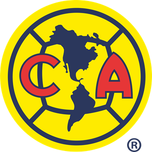
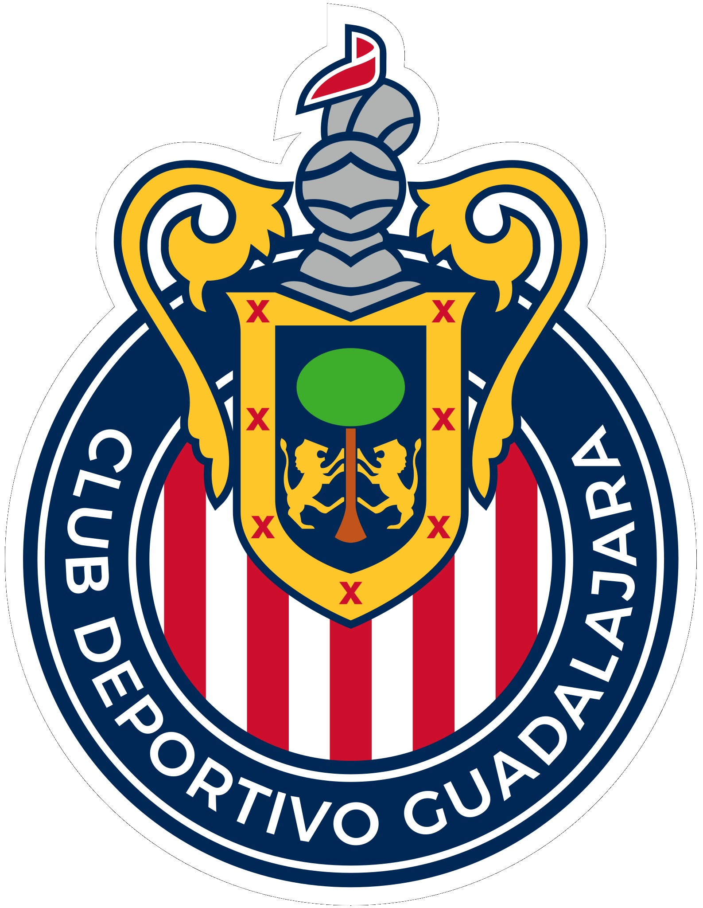
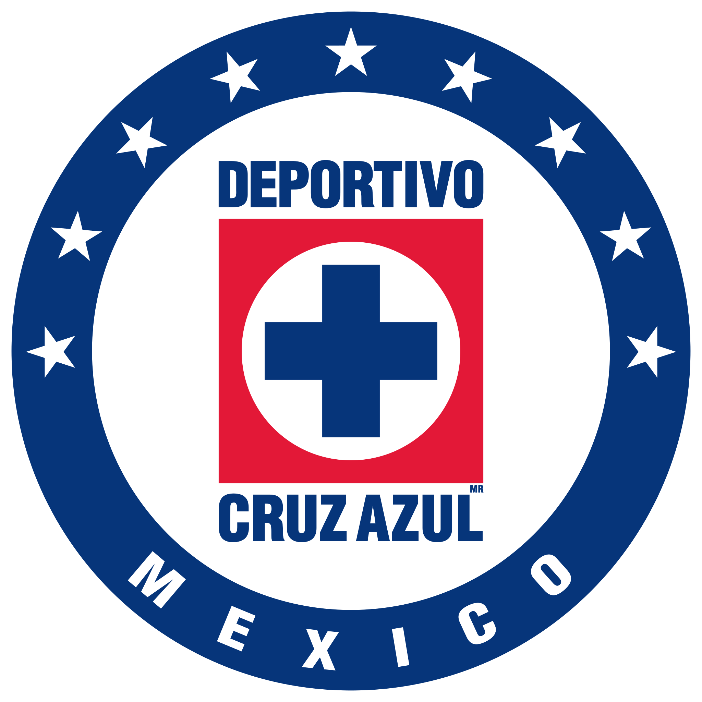
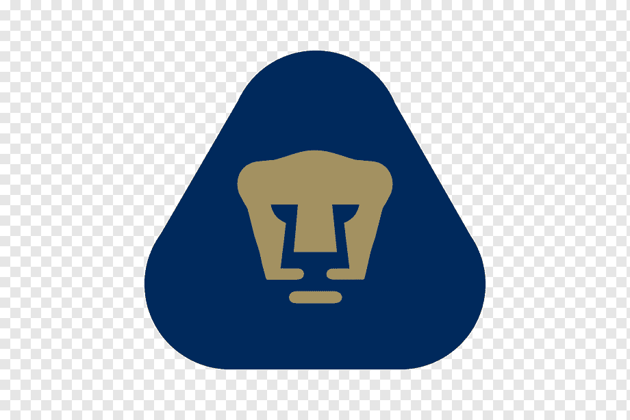

| America |
Desde 1959, el club es propiedad de Televisa, uno de los mayores grupos de comunicación de México. Poseedor de una de las mayores hinchadas del mundo, el América hace de local en el Estadio Azteca. |
 |
| Chivas |
El Guadalajara compite en la Liga MX en la máxima categoría del balompié mexicano. Este club es uno de los más antiguos del balompié azteca, pues su fundación data del 8 de mayo de 1906. |
 |
| Cruz Azul |
Cruz Azul es un equipo que juega en la Primera División del fútbol mexicano el cual se originó gracias a una cementera en Hidalgo. Comenzó su historia siendo el “equipo del pueblo”. |
 |
| Pumas |
El equipo ha ganado siete campeonatos de Liga, lo que lo ubica séptimo en la historia. Ha obtenido tres Copas de Campeones de la Concacaf, siendo el quinto equipo mexicano que más veces la ha conseguido detrás de América, Cruz Azul, Pachuca y Monterrey. |
 |
| Toluca |
Fue fundado oficialmente el 12 de febrero de 1917 por un patronato encabezado por los hermanos Manuel y Francisco Henkel Bross, y Román Ferrat Alday. Su sede se encuentra ubicada en la ciudad de Toluca, Estado de México, jugando sus partidos como local en el Estadio Nemesio Díez, también conocido como "La Bombonera". |
 |